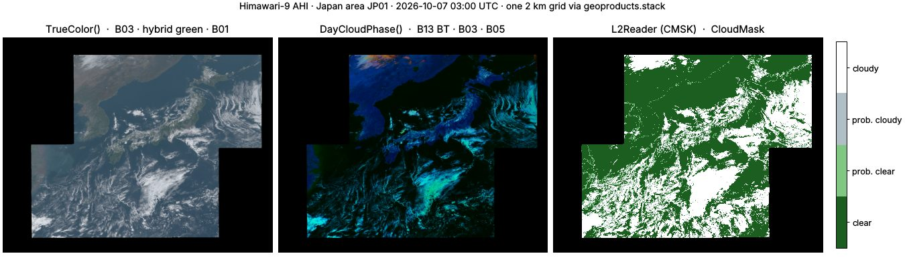

Himawari AHI¶
geoproducts.himawari reads the Advanced Himawari Imager on Himawari-8
(2015–2022) and -9 (2022–), the 140.7°E view of East Asia, the Western
Pacific and Australia. It decodes JMA's binary HSD segments with numpy
alone, reads NOAA's L2 cloud products on the same grid, and builds the
standard RGBs. AHI has the 16-band design of GOES-R ABI, so
GOES workflows port with band renaming.

pip install geotoolz-products # HSD reader: no extra
pip install 'geotoolz-products[himawari]' # + himawari.aws and L2 products (h5py)
pip install 'geotoolz-products[himawari,operators]' # + presets and RGB operators
Every fence below that finds or downloads files uses himawari.aws, so
it needs [himawari]; reading a local HSD file does not.
What a file is¶
An HSD file is one segment of one band of one scan. A header of
numbered binary blocks (satellite, size, projection, calibration,
position) precedes the uint16 counts. Files are distributed
bzip2-compressed (.DAT.bz2).
| Area | sector= |
Segments | Size (2 km bands) | Cadence |
|---|---|---|---|---|
Full disk FLDK |
"FLDK" |
10 horizontal strips | 5500 × 5500 | 10 min |
Japan JP01 … JP04 |
"Japan" |
1 | 1500 × 1200 | 2.5 min (4 per slot) |
Target R301 … R304 |
"Target" |
1 | 500 × 500 | 2.5 min (4 per slot) |
A 2 km full-disk band is 10 segments of 550 lines, about 3 MB each.
Bands keep their native resolution: B03 at 0.5 km; B01, B02 and B04 at
1 km; the rest at 2 km. himawari.BANDS is the 16-band table.
| Segment file | Lines (2 km) | Covers |
|---|---|---|
…_S0110.DAT.bz2 |
1 – 550 | the northern limb |
…_S0510.DAT.bz2 |
2201 – 2750 | the equator, north side |
…_S0610.DAT.bz2 |
2751 – 3300 | the equator, south side |
…_S1010.DAT.bz2 |
4951 – 5500 | the southern limb |
himawari.Reader takes any subset of a band's segments and places them
on the full (1, 5500, 5500) grid. Missing segments read as fill, and a
window decodes only the segments it overlaps. The grid is the CGMS
normalised geostationary projection of header block 3: evenly spaced
+proj=geos metres (sweep=y), with no per-pixel latitude/longitude.
Find and download¶
File names parse offline:
from geoproducts.himawari import aws
seg: aws.Segment = aws.parse_key(
"AHI-L1b-FLDK/2026/10/07/0300/HS_H09_20261007_0300_B13_FLDK_R20_S0510.DAT.bz2"
) # 'H09' · 'B13' · segment 5 of 10 · 2 km
bucket: str = aws.bucket("H09") # 'noaa-himawari9'
from datetime import datetime
from pathlib import Path
from geoproducts.himawari import aws
segments: list[aws.Segment] = aws.list_segments(
start=datetime(2026, 10, 7, 3, 0), # one 10-minute slot (naive → UTC)
band=13, # clean longwave window, 10.4 µm
segments=[5, 6], # the strips over 10°N – 10°S
) # 2 segments, ~3 MB each
paths: list[Path] = [aws.download(s, "data/ahi") for s in segments]
stored: list[Path] = [aws.download(s, "data/ahi", decompress=True) for s in segments] # .DAT, memory-mapped
decompress=True stores .DAT files (3–4× larger). They are
memory-mapped, so a window touches only its own lines: worth it when you
read many small windows of the full disk.
Read and calibrate¶
from datetime import datetime
from pathlib import Path
from georeader.geotensor import GeoTensor
from geoproducts import himawari
from geoproducts.himawari import aws
paths: list[Path] = [
aws.download(s, "data/ahi")
for s in aws.list_segments(start=datetime(2026, 10, 7, 3, 0), band=13, segments=[5, 6])
]
reader: himawari.Reader = himawari.Reader(paths, calibration="brightness_temperature")
segs: tuple[int, ...] = reader.segments # (5, 6) · grid (1, 5500, 5500), 2000 m
aoi: tuple[float, float, float, float] = (110.0, -5.0, 120.0, 5.0) # lon/lat box over Borneo
bt: GeoTensor = reader.read_from_bounds(aoi, crs_bounds="EPSG:4326") # (1, 546, 477) float32 · K
jp: aws.Segment = aws.list_segments(
start=datetime(2026, 10, 7, 3, 0), sector="Japan", band=3, area="JP01"
)[0]
red: himawari.Reader = himawari.Reader(aws.download(jp, "data/ahi"), calibration="reflectance") # (1, 4800, 6000) · 0.5 km
gain: float = red.header.updated_gain # 0.30901666 — the file's own coefficient
Every coefficient comes from the file being read:
calibration= |
Output | Formula |
|---|---|---|
"counts" |
uint16 |
the stored counts |
"radiance" (default) |
float32, W m⁻² sr⁻¹ µm⁻¹ |
counts · gain + offset (B01–B06: the updated visible calibration when present) |
"reflectance" |
float32 |
radiance · albedo coefficient (B01–B06) |
"brightness_temperature" |
float32, K |
Planck inversion at the central wavelength, then c0 + c1 T + c2 T² (B07–B16) |
These match JMA's definitions and an independent reference to float32
precision. Error pixels, pixels outside the scan and pixels off the
Earth's limb are NaN (65535 for "counts").
L2 cloud products¶
NOAA runs its cloud algorithms on every full-disk scan. It publishes
NetCDF-4 files under AHI-L2-FLDK-Clouds/: CMSK (cloud mask),
CHGT (cloud-top height) and CPHS (cloud phase). They sit on the AHI
2 km full disk pixel for pixel, so himawari.L2Reader places them on it.
Reading them needs [himawari] (h5py).
from datetime import datetime
from pathlib import Path
from geoproducts import himawari
from geoproducts.himawari import aws
cmsk: aws.L2File = aws.list_l2(start=datetime(2026, 10, 7, 3, 0))[0] # one CMSK file, ~370 MB
path: Path = aws.download(cmsk, "data/ahi")
mask: himawari.L2Reader = himawari.L2Reader(path) # (2, 5500, 5500) int8 · fill -128
bands: tuple[str, ...] = mask.variables # ('CloudMaskBinary', 'CloudMask')
codes: dict[int, str] = mask.flags("CloudMask") # {0: 'clear', 1: 'probably_clear', 2: 'probably_cloudy', 3: 'cloudy'}
prob: himawari.L2Reader = himawari.L2Reader(path, variables="CloudProbability") # (1, 5500, 5500) float32 · NaN fill
mask.available_variables lists the rest: Dust_Mask, Smoke_Mask,
Fire_Mask, …
One grid¶
geoproducts.stack puts the 0.5 km, 1 km
and 2 km bands of the Japan area — and a full-disk L2 mask — on one grid.
This is the figure above:
from datetime import datetime
from georeader.geotensor import GeoTensor
import geoproducts
from geoproducts import himawari
from geoproducts.himawari import aws
SLOT: datetime = datetime(2026, 10, 7, 3, 0) # 12:00 in Japan
def jp01(band: int, calibration: str) -> himawari.Reader:
"""One band of the JP01 Japan area at ``SLOT``."""
seg: aws.Segment = aws.list_segments(start=SLOT, sector="Japan", band=band, area="JP01")[0]
return himawari.Reader(aws.download(seg, "data/ahi"), calibration=calibration)
cmsk: aws.L2File = aws.list_l2(start=SLOT)[0] # ~370 MB
scene: GeoTensor = geoproducts.stack([
jp01(13, "brightness_temperature"), # reference: the 2 km grid
*(jp01(b, "reflectance") for b in (1, 2, 3, 4, 5)), # 1 km / 0.5 km → averaged
himawari.L2Reader(aws.download(cmsk, "data/ahi"), variables="CloudMask"), # full disk → cut, mode
]) # (7, 1200, 1500) float32
RGB recipes and presets¶
himawari.recipes holds the RGBs as data: the GOES quick-guide
stretches on the matching AHI bands. With [operators] each preset is a
gz.viz.RGBRecipe (see
Recipes and presets).
from datetime import datetime
from georeader.geotensor import GeoTensor
import geoproducts
import geotoolz as gz
from geoproducts import himawari
from geoproducts.himawari import aws
SLOT: datetime = datetime(2026, 10, 7, 3, 0)
def jp01(band: int, calibration: str) -> himawari.Reader:
"""One band of the JP01 Japan area at ``SLOT``."""
seg: aws.Segment = aws.list_segments(start=SLOT, sector="Japan", band=band, area="JP01")[0]
return himawari.Reader(aws.download(seg, "data/ahi"), calibration=calibration)
scene: GeoTensor = geoproducts.stack(
[jp01(13, "brightness_temperature"), *(jp01(b, "reflectance") for b in (1, 2, 3, 4, 5))]
) # (6, 1200, 1500) float32 · B13, B01 … B05
true_color: GeoTensor = himawari.TrueColor()(scene) # (6, 1200, 1500) → (3, 1200, 1500) float32 in [0, 1]
cloud_phase: GeoTensor = himawari.DayCloudPhase()(scene) # (6, 1200, 1500) → (3, 1200, 1500) float32
ndvi: GeoTensor = himawari.NDVI()(scene) # (6, 1200, 1500) → (1200, 1500) float32 · B03, B04
# Parallax for clouds at an assumed 10 km top, on a lon/lat grid.
lonlat: GeoTensor = gz.geom.Reproject(dst_crs="EPSG:4326", resolution=(0.02, 0.02))(
gz.spectral.SelectBands(bands=["B13"])(scene)
) # (1, 1200, 1500) → (1, h, w) float32
moved: GeoTensor = himawari.ParallaxCorrect(target_height_m=10_000.0)(lonlat) # (1, h, w) float32 · 140.7°E view
| Preset | Bands | Recipe |
|---|---|---|
himawari.TrueColor() |
B01–B04 | red B03 · hybrid green 0.93 B02 + 0.07 B04 · blue B01, γ 2.2 |
himawari.NaturalColor() |
B03, B04, B05 | day land cloud |
himawari.DayCloudPhase() |
B03, B05, B13 | day cloud phase distinction |
himawari.FireTemperature() |
B05, B06, B07 | fire temperature |
AHI's green band (0.51 µm) sits below the vegetation peak, so vegetation
looks too dark. himawari.HybridGreen() mixes in a share of the
near-infrared (nir_fraction=, default 0.07). MaskClouds reads
CloudMaskBinary (or conservative=True), and ParallaxCorrect also
takes a same-grid cloud-top height array.
Module layout¶
| Module | Contents |
|---|---|
himawari.reader |
Reader (counts / radiance / reflectance / BT), Calibration |
himawari.l2 |
L2Reader, full_disk_grid, product_code |
himawari.aws |
list_segments, list_l2, download (decompress=), parse_key, Segment, L2File, bucket, url |
himawari.recipes |
Recipe, RECIPES, TRUE_COLOR, NATURAL_COLOR, DAY_CLOUD_PHASE, FIRE_TEMPERATURE, HYBRID_GREEN |
himawari.presets |
NDVI, HybridGreen, MaskClouds, ParallaxCorrect, Recipe and the four named recipes ([operators]) |
himawari.constants |
BANDS, CHANNELS, FULL_DISK_GRIDS, cloud-mask codes, HIMAWARI_LON_DEG |
himawari.HSDHeader, read_header |
the decoded segment header |